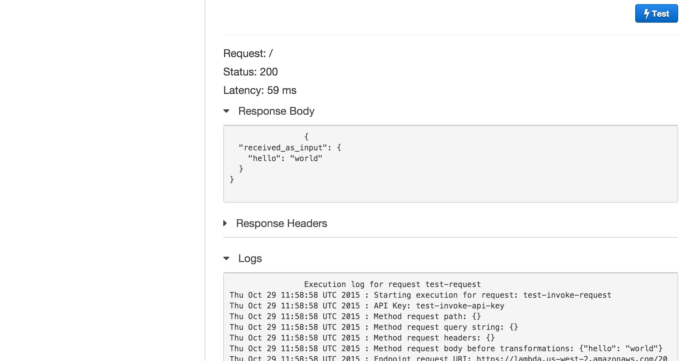

Servers are annoying, even in the age of cloud services. You choose them, provision them, configure them, deploy to them, monitor them, meter them. You decide when to add or remove them. And at the end of the month, you need to pay for what you used, and what you didn’t.
There is quite a lot to be said for a serverless architecture. It’s the quickest and cheapest way off the ground, for the hobbyist and scrappy startup alike. The explosion of SaaS in recent years has paved the way for the concept of “servers” to be someone else’s problem.
But there are things only servers can do properly. Cryptographic secrets, for instance, can’t be fully protected in browsers or mobile apps. Servers provide stronger assurances that a process will be run to completion. And browsers, though fast and reliable, are slow as hell and maddeningly uncontrollable.
It was in this climate that Amazon Web Services, industry leaders in managing large pools of computing resources, introduced the Lambda platform for ephemeral computing. Users could supply code, and based on certain triggers it would run somewhere, not immediately but milliseconds-soon. There were plenty of limitations at first – a 60 second execution limit, to name but one – but the service offered pure, serverless, on-demand computing, and at prices that small-to-medium businesses had no hope of matching themselves.
Not much later, the Lambda system was integrated into Amazon API Gateway, closing the loop on serverless API architecture and offering similar fire-sale prices to Lambda.
At this point, API Gateway and Lambda are mature and production-tested products, and as long as your API requirements don’t include white-hot response times or long-lived requests, they’re a very attractive option for the startup on a tech-spend diet.
The great news is that it’s not only cheap to stand up an API with API Gateway, it’s also quick work. Ten minutes if you’re copy-pasting, half an hour if you’re a good typist.
The work can be broadly divided into three steps:
Let’s dive in.
In this article, we’ll stick to the AWS Lambda default of JavaScript,
so we’ll need a working Node.js installation. On a Mac with
Homebrew, run brew update; brew install node.
We’ll start by writing a request handler in plain JavaScript. Let’s make a skeleton project to hold our request handler:
mkdir myNewApi
cd myNewApi
mkdir lib test
touch lib/my_new_api.js test/my_new_api_test.js index.js package.json
In package.json, we have the usual content, as well as a script to generate
a .zip from the contents of myNewApi.
{
"name": "myNewApi",
"version": "0.0.1",
"description": "Wicked awesome test API",
"author": "pete gamache <pete@appcues.com>",
"main": "index.js",
"dependencies": {
},
"devDependencies": {
"chai": "*",
"mocha": "*"
},
"scripts": {
"zip": "zip -r ../myNewApi.zip *"
}
}
Our index.js holds what we might deem “controller” code. It contains the
handler which AWS invokes as the main function of the Lambda. We load a
config file and our main code, and in exports.handler we invoke a
function we’re about to write, handleRequest, passing it event (a JS
object containing the JSON-decoded request body), config (a JS object
loaded from our config file), and a Node-style callback of the form
function (err, responseObject).
var package = require("./package.json");
var myNewApi = require("./lib/my_new_api.js");
console.log("loaded " + package.name + ", version " + package.version);
exports.handler = function (event, context) {
myNewApi.handleRequest(event, context.done);
}
In lib/my_new_api.js, we place a request handler which invokes its
given callback with a wrapped version of its input data:
exports.handleRequest = function (requestData, callback) {
var responseData = {received_as_input: requestData};
callback(null, responseData);
}
We are civilized humans in the twenty-first century.
We shall write a test.
In test/my_new_api_test.js:
var assert = require("chai").assert;
var myNewApi = require("../lib/my_new_api.js");
describe("myNewApi", function () {
it("exports handleRequest", function () {
assert.typeOf(myNewApi.handleRequest, "function");
});
});
With the files in place, run npm install to ensure all dependencies
are installed.
At this point, you should be able to type mocha at the command prompt
and see 1 passing test.
Now it’s time to take the code we just wrote and install it as a Lambda. This can be done with the AWS API, but here we will do it using the AWS Console on the web. Log into AWS, click on AWS Lambda, and click past any “Get Started” or “Select blueprint” crap. We’re aiming for “Configure function”.
Enter a camelCased name for your function, along with a description of what it does. Keep Node.js selected as our runtime. Here’s an example.
npm run zip
And myNewApi.zip will appear alongside the myNewApi/ directory.
Be sure you’ve run npm install beforehand!
The default Lambda function handler index.handler does not need
adjustment, because we set up our index.js to match.
For the “Role”, we need to set up a Lambda execution role. Select “Create New Role > Basic Execution Role” from the dropdown menu, and follow the instructions to create the role.
The advanced settings need no tweaking, but for more intensive tasks, the RAM and execution time limit can be increased there.
Click on “Create Function” to save the Lambda to AWS.
Once we’ve saved the Lambda, a Test button appears, allowing us to send a dummy payload to the function and observe its output. With the default test event, we should see results like the following:
OK. The Lambda’s in place, and we’ve watched it work. It’s time to set up API Gateway, so we navigate to that section of our AWS console.
Create a new API. Give it a name and a description.
We’ll eventually land on the Resources page, where you can create resources (paths) and methods on those resources.
A “method” in API Gateway terms is a combination of a “resource” (path) and an HTTP method to which it responds. API Gateway methods are the basic building blocks of the API.
Click on “Create Method”. Let’s use POST as an example, so we can show off more features than GET. On the following screen, select “Lambda function” as the integration type, and enter the details for the Lambda we just created.
AWS will ask for permission to grant API Gateway access to the Lambda; say yes.
We’ll land on the / - POST Method Execution page. There’s a lot of
important functionality in this screen, including input and output
validation and JSON transformations. (We won’t get too deep in this
demonstration, but you should play around here later.)
That lightning-bolt Test icon looks too good. Let’s click it.
Enter {"hello": "world"} as the request payload,
and ensure that the response body is:
{
"received_as_input": {
"hello": "world"
}
}

We are now one step away from having a real API. Click the “Deploy API” button in the sidebar. Create a new stage. Call it something. Hit “Deploy”.
You’ll see a url like
https://f8fenu11tf.execute-api.us-west-2.amazonaws.com/prod on the
next page. Let’s test it out on the command line:
$ curl -X POST -d '{"hi":"mom"}' https://f8fenu11tf.execute-api.us-west-2.amazonaws.com/prod
{"received_as_input":{"hi":"mom"}}
Congratulations! We have an API.
Mapping templates,
accessible in the Request Integration and Response Integration screens,
may be used to transform request or response data, including adding
request metadata from Amazon to request data from the user. One
particularly compelling use case is selecting different config
parameters based on the value of the stage parameter.
Be aware that input mapping templates match on content type, and thus
depend on a properly-set Content-Type request
header. Also be aware that mapping templates can turn nulls into blank
strings, depending on how they’re put together, so make sure your
request handling code is prepared for that.
Cross-origin resource sharing
can be enabled if you’d like to use your API from the browser without
setting up a custom domain for it. It involves creating an OPTIONS
endpoint alongside your POST endpoint, and installing some access
control headers.
Request and response models allow the validation of input and output against JSON Schemas. This provides the opportunity for rudimentary input checking outside the Lambda, for example.
API Gateway methods can be connected to not only a specific lambda,
but a specific version of a
Lambda.
This is a convenient way to pin
an API Gateway stage to a precise version of a Lambda, for instance
ensuring that the prod stage always points to the same code,
regardless of further changes to the Lambda. To use a specific version
of a Lambda, paste that version’s ARN into the API Gateway
Create Method screen and deploy or redeploy the stages which should
use it.
The JAWS Framework provides a convenient way to structure and maintain serverless APIs written with Lambda and API Gateway. It’s still a young project, but it’s gaining momentum quickly, and the improved source code management and scriptability make it an increasingly good choice for managing your serverless API. And for Python, check out the emerging PAWS Framework, heavily inspired by JAWS.
We’ve only just scratched the surface of what API Gateway can do. But we’ve still managed to set up an API in a matter of minutes, including deployment, without provisioning a single server. And it costs around five dollars per million requests.
If that sounds like a good fit for you and your project, give it a spin!
Pete Gamache is Head of Engineering at Appcues, an onboarding and user guides startup that moves fast and fixes things. He is a proud API geek and enjoys living in the future. Follow him on Twitter.